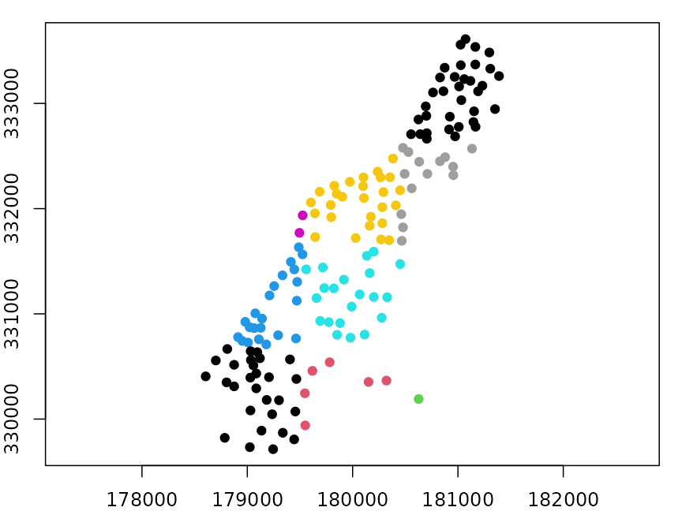

fastkcv computes leave-one-out and k-fold cross-validation for global kriging (every observation in the kriging neighborhood) exactly, and much faster than refitting the kriging system once per fold. It factorizes the covariance matrix of the observations once. Every fold’s predictions and variances then follow from small blocks of one matrix.
The interface follows gstat::krige.cv(): the same
formula, locations, data,
model, nfold and beta arguments,
and the same output columns. Ordinary, universal and simple kriging are
supported, with the nugget, nested models and 2D geometric anisotropy of
gstat variogram models.
A drop-in companion to krige.cv()
cv_gstat <- krige.cv(log(zinc) ~ 1, ~ x + y, meuse, model = v,
verbose = FALSE)
cv_fast <- kcv(log(zinc) ~ 1, ~ x + y, meuse, model = v)
head(cv_fast)
#> var1.pred var1.var observed residual zscore fold x y
#> 1 6.769182 0.1800190 6.929517 0.16033461 0.37789233 1 181072 333611
#> 2 6.767296 0.1747339 7.039660 0.27236448 0.65157117 2 181025 333558
#> 3 6.296517 0.1818894 6.461468 0.16495146 0.38676967 3 181165 333537
#> 4 6.039217 0.2281430 5.549076 -0.49014098 -1.02616546 4 181298 333484
#> 5 5.581987 0.1743017 5.594711 0.01272471 0.03047874 5 181307 333330
#> 6 5.425952 0.2311933 5.638355 0.21240263 0.44174562 6 181390 333260
all.equal(cv_gstat, cv_fast, tolerance = 1e-10)
#> [1] TRUE
max(abs(cv_fast$var1.pred - cv_gstat$var1.pred))
#> [1] 5.329071e-15The output has the same kind as the input: a data.frame here, an
sf object for sf input and a
SpatialPointsDataFrame for sp input.
var1.var is the variance of the error in predicting the
held-out observation, nugget included, as in gstat. Universal kriging
re-estimates the trend in every fold (generalized least squares), and
beta gives simple kriging with a known trend:
f10 <- fold_random(~ x + y, meuse, k = 10)
uk_gstat <- krige.cv(log(zinc) ~ sqrt(dist), ~ x + y, meuse, model = v,
nfold = f10, verbose = FALSE)
uk_fast <- kcv(log(zinc) ~ sqrt(dist), ~ x + y, meuse, model = v,
folds = f10)
max(abs(uk_fast$var1.var - uk_gstat$var1.var))
#> [1] 3.608225e-16
sk_fast <- kcv(log(zinc) ~ 1, ~ x + y, meuse, model = v, beta = 5.9)A scalar nfold = k draws folds with the same call that
krige.cv() uses, so the same seed gives the same folds in
both packages. fold_random() returns that fold vector.
Local neighborhoods (nmax, nmin,
maxdist), block kriging and unbounded variogram models
(such as Lin or Pow) are not supported and
raise an error. So do geographic coordinates and duplicate
locations.
The agreement with krige.cv() holds while the covariance
matrix is reasonably conditioned. A very smooth model without a nugget
(a Gaussian model with a long range, say) can make it nearly singular,
and then both packages lose accuracy. The factorization estimates the
reciprocal condition number of the matrix (shown when a
kcv_prepare() object is printed, below) and
kcv() warns when it is below 1e-13
(options(fastkcv.rcond_warn = )). Against a
quadruple-precision computation of the same cross-validation (Gaussian
and Stein models, n = 100 and 200, script
inst/bench/bench-conditioning.R), fastkcv’s largest error
in var1.pred was at most 1.2e-5 of the leave-one-out RMSE
above that threshold, 2e-5 to 1.4e-3 between 1e-14 and 1e-13, and up to
10 times the RMSE below 1e-14, with krige.cv() of similar
accuracy throughout. A small nugget restores the accuracy.
Factorize once, cross-validate many times
The expensive part does not depend on the folds.
kcv_prepare() does it once; kcv_run() then
computes the cross-validation for any fold scheme at a fraction of the
cost. kcv(...) is the same as
kcv_run(kcv_prepare(...), ...).
p <- kcv_prepare(log(zinc) ~ sqrt(dist), ~ x + y, meuse, model = v)
p
#> <kcv_prepared> universal kriging, n = 155, p = 2, 187.7 Kb
#> Estimated reciprocal condition number of C: 0.0051
set.seed(1)
rmse <- replicate(20, kcv_metrics(kcv_run(p, nfold = 10))$rmse)
summary(rmse)
#> Min. 1st Qu. Median Mean 3rd Qu. Max.
#> 0.3722 0.3777 0.3869 0.3837 0.3886 0.3962The prepared object holds an n x n matrix (8 n^2 bytes) and can be
saved with saveRDS().
Fold designs
With spatially correlated data, random folds put close neighbors of
every held-out point in the training data, so the scores mostly measure
interpolation over short distances. Spatial folds hold out whole
regions. fastkcv has three fold builders, all returning a plain integer
vector that also works as nfold in
krige.cv():
-
fold_random(): random folds, drawn as inkrige.cv(); -
fold_blocks(): a regular grid of blocks over the bounding box, given by the number of cells (blocks) or their size (size), optionally grouped at random intokfolds; -
fold_kmeans(): k-means clusters of the coordinates.
set.seed(1)
designs <- list(
random = fold_random(~ x + y, meuse, k = 10),
blocks = fold_blocks(~ x + y, meuse, blocks = c(3, 4)),
kmeans = fold_kmeans(~ x + y, meuse, k = 10)
)
sapply(designs, function(f) length(unique(f)))
#> random blocks kmeans
#> 10 9 10
do.call(rbind, lapply(designs, function(f) kcv_metrics(kcv_run(p, folds = f))))
#> n rmse mae bias mean_z var_z coverage_50
#> random 155 0.3876193 0.2778234 0.00308530 0.01101003 0.7747657 0.6387097
#> blocks 155 0.4379364 0.3358214 0.07177517 0.10877872 0.5089311 0.7225806
#> kmeans 155 0.4079954 0.3015766 -0.01852773 -0.02206494 0.4328302 0.7741935
#> coverage_80 coverage_90 coverage_95
#> random 0.8516129 0.9354839 0.9612903
#> blocks 0.8967742 0.9806452 0.9870968
#> kmeans 0.9354839 0.9806452 0.9870968kcv_metrics() reports the RMSE, the mean absolute error,
the bias, the mean and variance of the z-scores (ideally 0 and 1) and
the coverage of the Gaussian prediction intervals at several levels.
With by_fold = TRUE it gives one row per fold.
op <- par(mar = c(2, 2, 1, 1))
plot(meuse$x, meuse$y, col = designs$blocks, pch = 19, asp = 1,
xlab = "", ylab = "")
Block folds (3 x 4 grid over the bounding box).
par(op)Buffered leave-one-out
Buffered leave-one-out holds each observation out together with every
observation within a distance buffer of it, and predicts it
from the rest. As the radius grows past the range of spatial
correlation, the scores approach those of prediction at unsampled
locations far from the data. buffer = 0 is ordinary
leave-one-out. The column n_heldout gives the size of each
hold-out set.
radii <- c(0, 100, 200, 400, 800)
t(sapply(radii, function(r) {
out <- kcv_run(p, buffer = r)
c(radius = r, mean_heldout = mean(out$n_heldout),
unlist(kcv_metrics(out)[c("rmse", "mean_z", "var_z", "coverage_90")]))
}))
#> radius mean_heldout rmse mean_z var_z coverage_90
#> [1,] 0 1.000000 0.3771621 -0.003986240 0.7689624 0.9354839
#> [2,] 100 1.670968 0.3714215 -0.009283808 0.6786097 0.9483871
#> [3,] 200 5.064516 0.4349331 0.045777968 0.6756886 0.9419355
#> [4,] 400 15.529032 0.4640929 0.015686245 0.4840638 0.9548387
#> [5,] 800 42.212903 0.4397011 0.010197669 0.2782665 0.9935484Each point is a separate kriging problem with its own hold-out set,
so the cost grows with the size of the hold-out sets.
targets restricts the predictions to a subset of the
points. The hold-out sets are still formed from all observations, so the
statistics are those of a sample of points:
Several responses
The kriging weights depend on the locations, the model, the trend and
the folds, but not on the observed values. A matrix response is
therefore cross-validated from one factorization, and each additional
column costs only a few matrix products. The output stacks one block per
response and adds a response column.
kcv_metrics() then gives one row per response:
cv_metals <- kcv(cbind(log(zinc), log(copper), log(lead)) ~ 1, ~ x + y,
meuse, model = v, folds = f10)
table(cv_metals$response)
#>
#> log(zinc) log(copper) log(lead)
#> 155 155 155
kcv_metrics(cv_metals)[c("response", "rmse", "var_z", "coverage_90")]
#> response rmse var_z coverage_90
#> 1 log(zinc) 0.3998185 0.8371646 0.9225806
#> 2 log(copper) 0.3162379 0.5387856 0.9677419
#> 3 log(lead) 0.4050876 0.8744789 0.9096774kcv_run(p, y = ) cross-validates new responses at the
locations of a prepared object, with its trend and model. A simulation
study is one use: here, 200 fields are simulated from the variogram
model at the observation locations, and the cross-validated z-scores and
interval coverage are compared with their nominal values. They hold on
average when the model is correct:
C_v <- variogramLine(v, covariance = TRUE,
dist_vector = as.matrix(dist(meuse[, c("x", "y")])))
set.seed(3)
sims <- crossprod(chol(C_v), matrix(rnorm(nrow(meuse) * 200),
nrow(meuse)))
m_sim <- kcv_metrics(kcv_run(p, nfold = f10, y = sims))
nrow(m_sim)
#> [1] 200
colMeans(m_sim[c("mean_z", "var_z", "coverage_80", "coverage_95")])
#> mean_z var_z coverage_80 coverage_95
#> 3.085963e-05 1.028206e+00 7.938065e-01 9.484194e-01Every response must be observed at every location. A missing value in any column is an error, because a response cannot drop its own rows.
A precomputed covariance matrix
kcv_engine() takes the covariance matrix of the
observations, the trend matrix and the folds directly. Any positive
definite covariance can be used, for example one gstat cannot express.
Here, with the covariance from gstat::variogramLine(), it
reproduces kcv():
D <- as.matrix(dist(meuse[, c("x", "y")]))
C <- variogramLine(v, covariance = TRUE, dist_vector = D)
y <- log(meuse$zinc)
F <- matrix(1, nrow(meuse), 1)
e <- kcv_engine(C, F, y, folds = seq_len(nrow(meuse)))
max(abs(e$pred - cv_fast$var1.pred))
#> [1] 5.329071e-15The response can be a matrix: each column is cross-validated with the same weights, which costs little more than a single column. As an example of a covariance outside gstat’s models, observations with known, site-specific measurement-error variances add them to the diagonal:
tau2 <- ifelse(meuse$soil == 1, 0.01, 0.1)
e2 <- kcv_engine(C + diag(tau2), F, cbind(y, log(meuse$copper)),
folds = designs$blocks)
str(e2)
#> List of 3
#> $ pred : num [1:155, 1:2] 6.01 6.01 6.01 6.01 6.01 ...
#> ..- attr(*, "dimnames")=List of 2
#> .. ..$ : NULL
#> .. ..$ : chr [1:2] "y" ""
#> $ var : num [1:155] 0.698 0.698 0.698 0.788 0.786 ...
#> $ folds: int [1:155] 9 9 9 9 9 9 9 9 9 9 ...kcv_engine_prepare() and kcv_engine_run()
split it into the two stages, as kcv_prepare() and
kcv_run() do.
Performance, BLAS and memory
Almost all of the time goes into one dense Cholesky factorization and
one triangular inverse of the n x n covariance matrix. R hands these to
its BLAS and LAPACK libraries. The table below gives median times in
seconds on a 4-core laptop (Intel i7-6700HQ, OpenBLAS) for ordinary
kriging on simulated data (exponential model with a nugget, random
folds), from the benchmark scripts in the package sources
(inst/bench/). Each cell gives fastkcv’s time, then
krige.cv()’s time and the speed-up.
| n | LOO | 10-fold | 5-fold |
|---|---|---|---|
| 1,000 | 0.06; 67 (1,100x) | 0.06; 1.4 (21x) | 0.07; 0.8 (12x) |
| 2,000 | 0.25; 368 (1,500x) | 0.27; 7.7 (28x) | 0.29; 5.7 (19x) |
| 5,000 | 2.1; ~3,500 (~1,700x)* | 2.4; 112 (47x) | 2.6; 85 (32x) |
| 10,000 | 13; – | 15; – | 17; – |
* Not run: predicted from the smaller n. “–”: krige.cv()
not run (predicted above 10 minutes).
The speed-up is largest for leave-one-out and shrinks as the folds become fewer and larger. A refit of k folds costs about k factorizations of size n (k - 1) / k, while fastkcv’s single factorization dominates its own time for all but a few large folds (each fold of size m adds about m^2 n operations; at n = 3,000, the 2 folds of 2-fold cross-validation take about as long as the factorization, 10 folds a fifth of it).
fastkcv computes exact global kriging. krige.cv() with a
local neighborhood (nmax) solves a different, approximate
kriging system of fixed size per prediction, so its time grows about
linearly in n. For 10-fold cross-validation with nmax = 50
on the same simulated data (ordinary kriging; script
inst/bench/bench-local.R) it takes 0.34 s at n = 2,000 and
0.47 s at n = 4,000, against 0.24 s and 1.1 s for fastkcv with OpenBLAS
on 4 threads: local kriging catches up between n = 2,000 and 3,000
(between 1,000 and 2,000 with the default 8 OpenBLAS threads, and below
n = 1,000 with the reference BLAS). Its time also grows with the number
of folds: local leave-one-out took 58 s at n = 4,000, against 0.9 s for
fastkcv (OpenBLAS, 4 threads) and 24 s with the reference BLAS.
DiceKriging, which uses the same closed-form leave-one-out formulas, is
compared in the section “Related packages”. With the reference BLAS
every method is slower, and fastkcv’s gain over krige.cv()
is still about 600x for leave-one-out at n = 1,000 and 2.5x to 6x for 5
to 10 folds at n = 1,000 to 5,000. At n = 20,000, kcv()
takes about 110 seconds.
Several responses share the factorization. At n = 5,000 (OpenBLAS),
100 responses take 2.7 s (leave-one-out) to 3.6 s (buffered, radius 50)
in one kcv() call, 3.7 to 5.2 ms per additional response.
One kcv() call per response takes 233 to 317 s.
The reference BLAS that ships with many R builds is single-threaded
and much slower on these operations than an optimized BLAS such as
OpenBLAS, Intel MKL or Apple’s Accelerate. Check which one R uses with
extSoftVersion()["BLAS"] or sessionInfo(). To
switch:
- Linux (Debian/Ubuntu): install an optimized BLAS such as OpenBLAS
(
sudo apt install libopenblas0-pthread); the system’s alternatives mechanism switches R to it without reinstalling anything. - macOS: the CRAN build of R can use Apple’s Accelerate framework; see the R for macOS FAQ.
- Windows: see “R Installation and Administration” for replacing R’s BLAS.
Multithreaded BLAS libraries use all cores by default; when running
several R processes in parallel, limit the threads (for OpenBLAS, the
environment variable OPENBLAS_NUM_THREADS). The many small
matrix operations of buffered leave-one-out do not benefit from BLAS
threads. OpenBLAS starts one thread per logical CPU; on CPUs with
simultaneous multithreading, one thread per physical core can be much
faster (OPENBLAS_NUM_THREADS=4 on the 4-core, 8-thread
laptop above: 1.6 to 2 times faster for 10-fold kcv() at n
= 1,500 to 5,000). The table above used the default 8 threads.
kcv() builds the covariance matrix in place and needs
one n x n matrix (8 n^2 bytes: 0.8 GB at n = 10,000, 3.2 GB at n =
20,000); its measured peak memory use above R’s own baseline is within
2% of that at n = 20,000. kcv_engine() copies the user’s
matrix and needs two. The requirement is checked before anything is
allocated, against getOption("fastkcv.max_gb", 6.4) GB;
raise the option on machines with more memory.
Related packages
fastkcv is a companion to gstat, not a fork or a replacement.
kcv() takes the inputs of krige.cv() and
returns its output, and fitting the variogram and kriging new locations
stay with gstat. It is a separate package for three reasons:
- The single factorization works only for global kriging, where every
fold shares one covariance matrix of the observations. gstat’s engine
sets up a kriging system for each prediction location, which is what
makes local neighborhoods (
nmax,nmin,maxdist) possible; with local neighborhoods every point has its own system and there is nothing to factorize once. - It needs compiled C++ code (Rcpp, RcppArmadillo) and a dense n x n matrix (8 n^2 bytes), which is checked before anything is allocated.
- Most of the package is a cross-validation toolkit rather than a
faster
krige.cv(): buffered leave-one-out, spatial fold builders,kcv_metrics(),kcv_prepare()/kcv_run()to reuse one factorization across fold designs, andkcv_engine()for any covariance matrix.
DiceKriging computes leave-one-out (leaveOneOut.km())
and, since version 1.6.0, multiple-fold cross-validation
(cv()) with the same closed-form formulas (Dubrule 1983;
Ginsbourger and Schärer 2024), for simple kriging and for kriging with
the trend re-estimated in each fold. Both handle a homogeneous nugget;
observations with individual noise variances (noise.var)
are not supported. cv() accepts folds that share points and
also returns the covariance matrices of the cross-validation errors,
which fastkcv does not. DiceKriging works with tensor-product kernels on
a design matrix rather than gstat variogram models on spatial data. From
the same covariance matrix, with or without a nugget, the two give the
same variances to about 1e-15 and predictions to about 1e-13. The
exception is the smoother matern5_2 kernel without a nugget
and with the trend re-estimated: its covariance matrix is badly
conditioned, and the predictions agree only to between 1e-9 and 1e-7. On
leave-one-out without a nugget, fastkcv is 1.6 to 4.1 times faster end
to end (model setup plus leave-one-out) with OpenBLAS and 1.4 to 2.1
times with the reference BLAS; on the leave-one-out step alone the two
are about level (0.9 to 1.8 times with OpenBLAS, 0.75 to 0.9 times with
the reference BLAS).
spmodel fits spatial linear models with its own covariance families
(including a nugget and anisotropy) and computes exact leave-one-out
(loocv()) and k-fold cross-validation (kcv(),
with user folds through folds_index) from one inverse of
the covariance matrix, updated for each fold, with the trend
re-estimated by generalized least squares. Above n = 5,000 it switches
to local approximations by default. It reports bias, MSPE, RMSPE, the
squared correlation and interval coverage. spmodel also exports a
function named kcv(): when both packages are attached, the
one attached last masks the other, so call fastkcv::kcv()
or spmodel::kcv() explicitly. Given a fitted spmodel model,
fastkcv’s kcv() stops with a pointer to
spmodel::kcv().
For computer experiments, hetGP (LOO_preds(), for
homoscedastic and heteroscedastic Gaussian process models) and
RobustGaSP (leave_one_out_rgasp()) also give closed-form
leave-one-out predictions.
What fastkcv adds to these is gstat’s variogram models and input
formats, spatial fold builders and buffered leave-one-out computed from
the same factorization, several responses from one factorization, and
the split into kcv_prepare() and kcv_run()
that reuses one factorization across fold designs.
blockCV and spatialsample build spatial folds (blocks, clusters,
buffers, nearest-neighbor distance matching) for any model, but do not
fit or predict with one. A partition from them, such as
folds_ids from blockCV’s cv_spatial(),
cv_cluster() or cv_group() (leave-group-out),
can be passed to kcv_run(folds = ). blockCV’s
cv_buffer() and cv_nndm() return overlapping
hold-out sets (folds_list) rather than a partition;
fastkcv’s own buffer argument covers buffered
leave-one-out.
| LOO | k-fold | Buffered LOO | Block / cluster folds | Models | Input | One factorization, exact | CV error covariance | |
|---|---|---|---|---|---|---|---|---|
| fastkcv | yes | yes | yes | builders, any fold vector | gstat models, nugget, anisotropy | data.frame, sf, sp
|
yes | no |
gstat krige.cv()
|
yes | yes | no | any fold vector | gstat models, nugget, anisotropy | data.frame, sf, sp
|
no (refits each fold) | no |
DiceKriging leaveOneOut.km(),
cv()
|
yes | yes | overlapping folds, no builder | any index list | tensor-product kernels, homogeneous nugget | design matrix | yes | yes |
spmodel loocv(), kcv()
|
yes | yes | no | any fold vector | own families, nugget, anisotropy | data.frame, sf
|
yes (local above n = 5,000) | no |
| blockCV | NNDM, kNNDM | yes | yes | yes, and leave-group-out | (folds only) |
sf, sp points |
(folds only) | (folds only) |
| spatialsample | yes (v = Inf) |
yes | yes | yes | (folds only) | sf |
(folds only) | (folds only) |
“(folds only)”: the package returns fold assignments and fits no
model. NNDM is nearest-neighbor distance matching
(cv_nndm()), a variant of leave-one-out; blockCV’s buffered
leave-one-out is cv_buffer(). spatialsample’s buffered
leave-one-out is spatial_buffer_vfold_cv() with
v = Inf and a buffer.